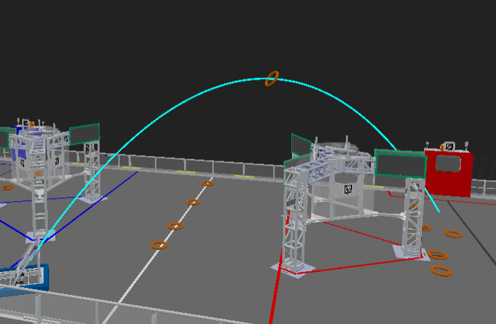
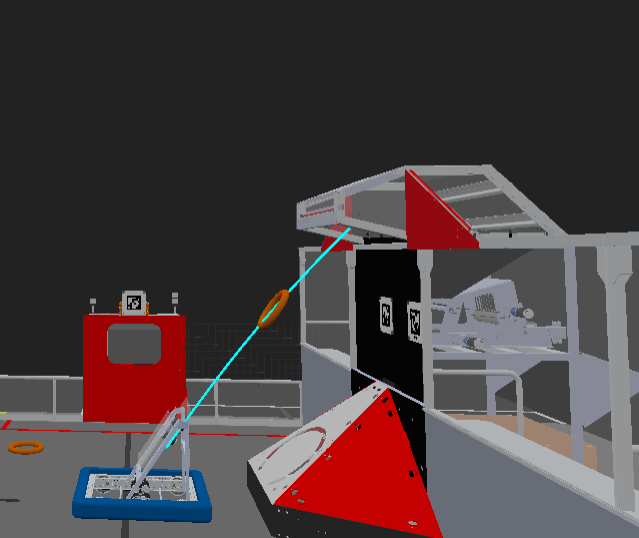

Simulating GamePiece Projectiles
Info
You are reading the documentation for a Beta version of maple-sim. API references are subject to change in future versions.
0. Overview
Projectiles are game pieces launched into the air, typically from flywheels. In maple-sim, these game pieces are modeled using basic projectile motion with gravity only.
 
Tip
This simulation is intended to test code logic for auto-aiming functions and measure the accuracy of your shooter optimization under simulated vision, drive, and flywheels.
It DOES NOT replicate the projectile motion of a real game piece. You will need to use different constants for shooter optimization in the simulation and on the real robot.
1. Creating a GamePiece Projectile
The GamePieceProjectile is an abstract class representing any game piece that flies in the air. You will need to create an instance of this class.
Currently, the only subclass of GamePieceProjectile is NoteOnFly, which represents a Crescendo Note launched into the air.
NoteOnFly noteOnFly = new NoteOnFly(
// Specify the position of the chassis when the note is launched
robotSimulationWorldPose.getTranslation(),
// Specify the translation of the shooter from the robot center (in the shooter’s reference frame)
new Translation2d(0.2, 0),
// Specify the field-relative speed of the chassis, adding it to the initial velocity of the projectile
chassisSpeedsFieldRelative,
// The shooter facing direction is the same as the robot’s facing direction
robotSimulationWorldPose.getRotation()
// Add the shooter’s rotation
+ shooterRotation,
// Initial height of the flying note
0.45,
// The launch speed is proportional to the RPM; assumed to be 16 meters/second at 6000 RPM
velocityRPM / 6000 * 20,
// The angle at which the note is launched
Math.toRadians(55)
);
2. Configuring the GamePiece
Configuring Target
You can configure the projectile to have a target. If the projectile is within a tolerance range near the target during its flight, it will hit the target, disappear, and trigger a callback.
This can be done through the following configuration:
noteOnFly
// Set the target center to the Crescendo Speaker of the current alliance
.withTargetPosition(() -> FieldMirroringUtils.toCurrentAllianceTranslation(new Translation3d(0.25, 5.56, 2.3)))
// Set the tolerance: x: ±0.5m, y: ±1.2m, z: ±0.3m (this is the size of the speaker's "mouth")
.withTargetTolerance(new Translation3d(0.5, 1.2, 0.3))
// Set a callback to run when the note hits the target
.withHitTargetCallBack(() -> System.out.println("Hit speaker, +2 points!"));
asSpeakerShotNote(Runnable) and asAmpShotNote(Runnable) from NoteOnFly.
noteOnFly
// Configure the Speaker (of the current alliance) as the target of the projectile
.asSpeakerShotNote(() -> System.out.println("Hit speaker, +2 points!"));
noteOnFly
// Configure the Amp (of the current alliance) as the target of the projectile
.asAmpShotNote(() -> System.out.println("Hit amp, +1 point!"));
Visualizing Trajectory
noteOnFly
// Configure callbacks to visualize the flight trajectory of the projectile
.withProjectileTrajectoryDisplayCallBack(
// Callback for when the note will eventually hit the target (if configured)
(pose3ds) -> Logger.recordOutput("Flywheel/NoteProjectileSuccessfulShot", pose3ds.toArray(Pose3d[]::new)),
// Callback for when the note will eventually miss the target, or if no target is configured
(pose3ds) -> Logger.recordOutput("Flywheel/NoteProjectileUnsuccessfulShot", pose3ds.toArray(Pose3d[]::new))
);
Tip
On Advantage Scope, you can visualize the two trajectories with different colors (e.g., green and red) to see if the note missed the target.
Becoming GamePieceOnFieldSimulation
In this simulation, a game piece launched into the air can be configured to become a GamePieceOnFieldSimulation upon touchdown.
When the projectile touches down, a GamePieceOnFieldSimulation will be added to the SimulatedArena, conserving the projectile’s air velocity.
noteOnFly
// Configure the note projectile to become a NoteOnField upon touching the ground
.enableBecomeNoteOnFieldAfterTouchGround();
3. Launching the GamePiece
The projectile simulation is updated and visualized within the SimulatedArena instance.
To register the projectile, use:
// Add the projectile to the simulated arena
SimulatedArena.getInstance().addGamePieceProjectile(noteOnFly);
The real-time positions of the flying game pieces are also visualized with other game pieces, as described here.